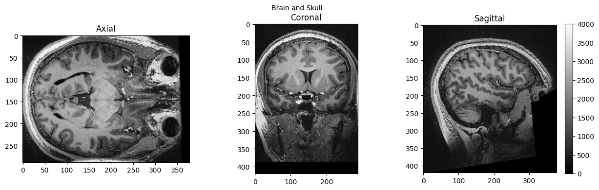
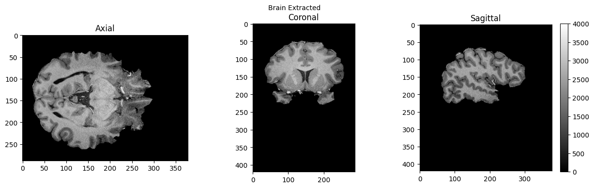
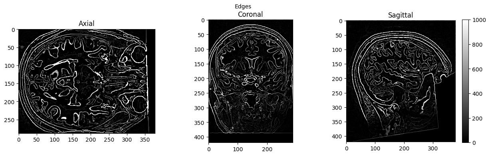

Basic Nipype Example#
Author: Steffen Bollmann
Setup Neurodesk#
import os
import sys
IN_COLAB = 'google.colab' in sys.modules
if IN_COLAB:
os.environ["LD_PRELOAD"] = "";
os.environ["APPTAINER_BINDPATH"] = "/content,/tmp,/cvmfs"
os.environ["MPLCONFIGDIR"] = "/content/matplotlib-mpldir"
os.environ["LMOD_CMD"] = "/usr/share/lmod/lmod/libexec/lmod"
!curl -J -O https://raw.githubusercontent.com/NeuroDesk/neurocommand/main/googlecolab_setup.sh
!chmod +x googlecolab_setup.sh
!./googlecolab_setup.sh
os.environ["MODULEPATH"] = ':'.join(map(str, list(map(lambda x: os.path.join(os.path.abspath('/cvmfs/neurodesk.ardc.edu.au/neurodesk-modules/'), x),os.listdir('/cvmfs/neurodesk.ardc.edu.au/neurodesk-modules/')))))
from google.colab import output
output.enable_custom_widget_manager()
!pip install ipyniivue
# Output CPU information:
!cat /proc/cpuinfo | grep 'vendor' | uniq
!cat /proc/cpuinfo | grep 'model name' | uniq
vendor_id : GenuineIntel
model name : Intel(R) Xeon(R) Platinum 8272CL CPU @ 2.60GHz
Demonstrating the module system in Python and Nipype#
# we can use lmod to load fsl in a specific version
import lmod
await lmod.load('fsl/6.0.4')
await lmod.list()
['Lmod',
'Warning:',
'The',
'environment',
'MODULEPATH',
'has',
'been',
'changed',
'in',
'unexpected',
'ways.',
'Lmod',
'is',
'unable',
'to',
'use',
'given',
'MODULEPATH.',
'It',
'is',
'using:',
'"/cvmfs/neurodesk.ardc.edu.au/neurodesk-modules/functional_imaging:/cvmfs/neurodesk.ardc.edu.au/neurodesk-modules/rodent_imaging:/cvmfs/neurodesk.ardc.edu.au/neurodesk-modules/image_registration:/cvmfs/neurodesk.ardc.edu.au/neurodesk-modules/structural_imaging:/cvmfs/neurodesk.ardc.edu.au/neurodesk-modules/image_segmentation:/cvmfs/neurodesk.ardc.edu.au/neurodesk-modules/quantitative_imaging:/cvmfs/neurodesk.ardc.edu.au/neurodesk-modules/workflows:/cvmfs/neurodesk.ardc.edu.au/neurodesk-modules/hippocampus:/cvmfs/neurodesk.ardc.edu.au/neurodesk-modules/image_reconstruction:/cvmfs/neurodesk.ardc.edu.au/neurodesk-modules/data_organisation:/cvmfs/neurodesk.ardc.edu.au/neurodesk-modules/electrophysiology:/cvmfs/neurodesk.ardc.edu.au/neurodesk-modules/phase_processing:/cvmfs/neurodesk.ardc.edu.au/neurodesk-modules/programming:/cvmfs/neurodesk.ardc.edu.au/neurodesk-modules/machine_learning:/cvmfs/neurodesk.ardc.edu.au/neurodesk-modules/diffusion_imaging:/cvmfs/neurodesk.ardc.edu.au/neurodesk-modules/body:/cvmfs/neurodesk.ardc.edu.au/neurodesk-modules/visualization:/cvmfs/neurodesk.ardc.edu.au/neurodesk-modules/spectroscopy:/cvmfs/neurodesk.ardc.edu.au/neurodesk-modules/quality_control:/cvmfs/neurodesk.ardc.edu.au/neurodesk-modules/statistics:/cvmfs/neurodesk.ardc.edu.au/neurodesk-modules/shape_analysis:/cvmfs/neurodesk.ardc.edu.au/neurodesk-modules/spine:/cvmfs/neurodesk.ardc.edu.au/neurodesk-modules/molecular_biology:/cvmfs/neurodesk.ardc.edu.au/neurodesk-modules/bids_apps::".',
'Please',
'use',
'"module',
'use',
'to',
'change',
'MODULEPATH',
'instead.',
'fsl/6.0.4']
from nipype.interfaces.fsl.base import Info
print(Info.version())
# if the FSL version is changed using lmod above, the kernel of the notebook needs to be restarted!
6.0.4:ddd0a010
!bet
Usage: bet <input> <output> [options]
Main bet2 options:
-o generate brain surface outline overlaid onto original image
-m generate binary brain mask
-s generate approximate skull image
-n don't generate segmented brain image output
-f <f> fractional intensity threshold (0->1); default=0.5; smaller values give larger brain outline estimates
-g <g> vertical gradient in fractional intensity threshold (-1->1); default=0; positive values give larger brain outline at bottom, smaller at top
-r <r> head radius (mm not voxels); initial surface sphere is set to half of this
-c <x y z> centre-of-gravity (voxels not mm) of initial mesh surface.
-t apply thresholding to segmented brain image and mask
-e generates brain surface as mesh in .vtk format
Variations on default bet2 functionality (mutually exclusive options):
(default) just run bet2
-R robust brain centre estimation (iterates BET several times)
-S eye & optic nerve cleanup (can be useful in SIENA - disables -o option)
-B bias field & neck cleanup (can be useful in SIENA)
-Z improve BET if FOV is very small in Z (by temporarily padding end slices)
-F apply to 4D FMRI data (uses -f 0.3 and dilates brain mask slightly)
-A run bet2 and then betsurf to get additional skull and scalp surfaces (includes registrations)
-A2 <T2> as with -A, when also feeding in non-brain-extracted T2 (includes registrations)
Miscellaneous options:
-v verbose (switch on diagnostic messages)
-h display this help, then exits
-d debug (don't delete temporary intermediate images)
Load afni as well#
await lmod.load('afni/22.3.06')
await lmod.list()
Lmod Warning: The environment MODULEPATH has been changed in unexpected ways.
Lmod is unable to use given MODULEPATH. It is using:
"/cvmfs/neurodesk.ardc.edu.au/neurodesk-modules/functional_imaging:/cvmfs/neurodesk.ardc.edu.au/neurodesk-modules/rodent_imaging:/cvmfs/neurodesk.ardc.edu.au/neurodesk-modules/image_registration:/cvmfs/neurodesk.ardc.edu.au/neurodesk-modules/structural_imaging:/cvmfs/neurodesk.ardc.edu.au/neurodesk-modules/image_segmentation:/cvmfs/neurodesk.ardc.edu.au/neurodesk-modules/quantitative_imaging:/cvmfs/neurodesk.ardc.edu.au/neurodesk-modules/workflows:/cvmfs/neurodesk.ardc.edu.au/neurodesk-modules/hippocampus:/cvmfs/neurodesk.ardc.edu.au/neurodesk-modules/image_reconstruction:/cvmfs/neurodesk.ardc.edu.au/neurodesk-modules/data_organisation:/cvmfs/neurodesk.ardc.edu.au/neurodesk-modules/electrophysiology:/cvmfs/neurodesk.ardc.edu.au/neurodesk-modules/phase_processing:/cvmfs/neurodesk.ardc.edu.au/neurodesk-modules/programming:/cvmfs/neurodesk.ardc.edu.au/neurodesk-modules/machine_learning:/cvmfs/neurodesk.ardc.edu.au/neurodesk-modules/diffusion_imaging:/cvmfs/neurodesk.ardc.edu.au/neurodesk-modules/body:/cvmfs/neurodesk.ardc.edu.au/neurodesk-modules/visualization:/cvmfs/neurodesk.ardc.edu.au/neurodesk-modules/spectroscopy:/cvmfs/neurodesk.ardc.edu.au/neurodesk-modules/quality_control:/cvmfs/neurodesk.ardc.edu.au/neurodesk-modules/statistics:/cvmfs/neurodesk.ardc.edu.au/neurodesk-modules/shape_analysis:/cvmfs/neurodesk.ardc.edu.au/neurodesk-modules/spine:/cvmfs/neurodesk.ardc.edu.au/neurodesk-modules/molecular_biology:/cvmfs/neurodesk.ardc.edu.au/neurodesk-modules/bids_apps::".
Please use "module use ..." to change MODULEPATH instead.
['Lmod',
'Warning:',
'The',
'environment',
'MODULEPATH',
'has',
'been',
'changed',
'in',
'unexpected',
'ways.',
'Lmod',
'is',
'unable',
'to',
'use',
'given',
'MODULEPATH.',
'It',
'is',
'using:',
'"/cvmfs/neurodesk.ardc.edu.au/neurodesk-modules/functional_imaging:/cvmfs/neurodesk.ardc.edu.au/neurodesk-modules/rodent_imaging:/cvmfs/neurodesk.ardc.edu.au/neurodesk-modules/image_registration:/cvmfs/neurodesk.ardc.edu.au/neurodesk-modules/structural_imaging:/cvmfs/neurodesk.ardc.edu.au/neurodesk-modules/image_segmentation:/cvmfs/neurodesk.ardc.edu.au/neurodesk-modules/quantitative_imaging:/cvmfs/neurodesk.ardc.edu.au/neurodesk-modules/workflows:/cvmfs/neurodesk.ardc.edu.au/neurodesk-modules/hippocampus:/cvmfs/neurodesk.ardc.edu.au/neurodesk-modules/image_reconstruction:/cvmfs/neurodesk.ardc.edu.au/neurodesk-modules/data_organisation:/cvmfs/neurodesk.ardc.edu.au/neurodesk-modules/electrophysiology:/cvmfs/neurodesk.ardc.edu.au/neurodesk-modules/phase_processing:/cvmfs/neurodesk.ardc.edu.au/neurodesk-modules/programming:/cvmfs/neurodesk.ardc.edu.au/neurodesk-modules/machine_learning:/cvmfs/neurodesk.ardc.edu.au/neurodesk-modules/diffusion_imaging:/cvmfs/neurodesk.ardc.edu.au/neurodesk-modules/body:/cvmfs/neurodesk.ardc.edu.au/neurodesk-modules/visualization:/cvmfs/neurodesk.ardc.edu.au/neurodesk-modules/spectroscopy:/cvmfs/neurodesk.ardc.edu.au/neurodesk-modules/quality_control:/cvmfs/neurodesk.ardc.edu.au/neurodesk-modules/statistics:/cvmfs/neurodesk.ardc.edu.au/neurodesk-modules/shape_analysis:/cvmfs/neurodesk.ardc.edu.au/neurodesk-modules/spine:/cvmfs/neurodesk.ardc.edu.au/neurodesk-modules/molecular_biology:/cvmfs/neurodesk.ardc.edu.au/neurodesk-modules/bids_apps::".',
'Please',
'use',
'"module',
'use',
'to',
'change',
'MODULEPATH',
'instead.',
'fsl/6.0.4',
'afni/22.3.06']
download test data#
![ -f ./sub-01_ses-01_7T_T1w_defaced.nii ] && echo "$FILE exist." || wget https://objectstorage.us-ashburn-1.oraclecloud.com/n/idrvm4tkz2a8/b/TOMCAT/o/TOMCAT_DIB/sub-01/ses-01_7T/anat/sub-01_ses-01_7T_T1w_defaced.nii.gz -O ./sub-01_ses-01_7T_T1w_defaced.nii.gz
![ -f ./sub-01_ses-01_7T_T1w_defaced.nii ] && echo "$FILE exist." || gunzip ./sub-01_ses-01_7T_T1w_defaced.nii.gz
--2023-07-26 09:09:18-- https://objectstorage.us-ashburn-1.oraclecloud.com/n/idrvm4tkz2a8/b/TOMCAT/o/TOMCAT_DIB/sub-01/ses-01_7T/anat/sub-01_ses-01_7T_T1w_defaced.nii.gz
Resolving objectstorage.us-ashburn-1.oraclecloud.com (objectstorage.us-ashburn-1.oraclecloud.com)...
134.70.24.1, 134.70.32.1, 134.70.28.1
Connecting to objectstorage.us-ashburn-1.oraclecloud.com (objectstorage.us-ashburn-1.oraclecloud.com)|134.70.24.1|:443... connected.
HTTP request sent, awaiting response...
200 OK
Length: 72682635 (69M) [application/octet-stream]
Saving to: ‘./sub-01_ses-01_7T_T1w_defaced.nii.gz’
./sub-01_ 0%[ ] 0 --.-KB/s
./sub-01_s 0%[ ] 456.00K 1.90MB/s
./sub-01_se 1%[ ] 856.00K 1.79MB/s
./sub-01_ses 1%[ ] 1.15M 1.64MB/s
./sub-01_ses- 2%[ ] 1.48M 1.58MB/s
./sub-01_ses-0 2%[ ] 1.85M 1.59MB/s
./sub-01_ses-01 3%[ ] 2.23M 1.59MB/s
./sub-01_ses-01_ 3%[ ] 2.65M 1.62MB/s
./sub-01_ses-01_7 4%[ ] 3.09M 1.65MB/s
./sub-01_ses-01_7T 5%[> ] 3.55M 1.69MB/s
./sub-01_ses-01_7T_ 5%[> ] 4.04M 1.73MB/s
/sub-01_ses-01_7T_T 6%[> ] 4.49M 1.75MB/s
sub-01_ses-01_7T_T1 6%[> ] 4.74M 1.69MB/s
ub-01_ses-01_7T_T1w 7%[> ] 4.93M 1.63MB/s eta 40s
b-01_ses-01_7T_T1w_ 7%[> ] 5.09M 1.56MB/s eta 40s
-01_ses-01_7T_T1w_d 7%[> ] 5.24M 1.46MB/s eta 40s
01_ses-01_7T_T1w_de 7%[> ] 5.37M 1.39MB/s eta 40s
1_ses-01_7T_T1w_def 7%[> ] 5.51M 1.34MB/s eta 40s
_ses-01_7T_T1w_defa 8%[> ] 5.63M 1.27MB/s eta 47s
ses-01_7T_T1w_defac 8%[> ] 5.77M 1.19MB/s eta 47s
es-01_7T_T1w_deface 8%[> ] 5.87M 1.10MB/s eta 47s
s-01_7T_T1w_defaced 8%[> ] 5.95M 1003KB/s eta 47s
-01_7T_T1w_defaced. 8%[> ] 6.04M 911KB/s eta 47s
01_7T_T1w_defaced.n 8%[> ] 6.12M 747KB/s eta 56s
1_7T_T1w_defaced.ni 8%[> ] 6.21M 656KB/s eta 56s
_7T_T1w_defaced.nii 9%[> ] 6.32M 541KB/s eta 56s
7T_T1w_defaced.nii. 9%[> ] 6.45M 523KB/s eta 56s
T_T1w_defaced.nii.g 9%[> ] 6.55M 506KB/s eta 56s
_T1w_defaced.nii.gz 9%[> ] 6.70M 494KB/s eta 61s
T1w_defaced.nii.gz 9%[> ] 6.80M 487KB/s eta 61s
1w_defaced.nii.gz 9%[> ] 6.93M 484KB/s eta 61s
w_defaced.nii.gz 10%[=> ] 7.10M 492KB/s eta 61s
_defaced.nii.gz 10%[=> ] 7.29M 508KB/s eta 61s
defaced.nii.gz 10%[=> ] 7.46M 525KB/s eta 64s
efaced.nii.gz 10%[=> ] 7.60M 544KB/s eta 64s
faced.nii.gz 11%[=> ] 7.73M 550KB/s eta 64s
aced.nii.gz 11%[=> ] 7.85M 565KB/s eta 64s
ced.nii.gz 11%[=> ] 7.98M 583KB/s eta 64s
ed.nii.gz 11%[=> ] 8.13M 607KB/s eta 67s
d.nii.gz 11%[=> ] 8.26M 607KB/s eta 67s
.nii.gz 12%[=> ] 8.40M 620KB/s eta 67s
nii.gz 12%[=> ] 8.57M 635KB/s eta 67s
ii.gz 12%[=> ] 8.76M 656KB/s eta 67s
i.gz 12%[=> ] 8.95M 675KB/s eta 68s
.gz 13%[=> ] 9.12M 686KB/s eta 68s
gz 13%[=> ] 9.26M 674KB/s eta 68s
z 13%[=> ] 9.32M 642KB/s eta 68s
13%[=> ] 9.37M 595KB/s eta 68s
. 13%[=> ] 9.45M 579KB/s eta 71s
./ 13%[=> ] 9.54M 569KB/s eta 71s
./s 13%[=> ] 9.66M 565KB/s eta 71s
./su 14%[=> ] 9.80M 569KB/s eta 71s
./sub 14%[=> ] 9.98M 579KB/s eta 71s
./sub- 14%[=> ] 10.18M 603KB/s eta 72s
./sub-0 14%[=> ] 10.37M 618KB/s eta 72s
./sub-01 15%[==> ] 10.54M 613KB/s eta 72s
./sub-01_ 15%[==> ] 10.60M 579KB/s eta 72s
./sub-01_s 15%[==> ] 10.66M 521KB/s eta 74s
./sub-01_se 15%[==> ] 10.73M 489KB/s eta 74s
./sub-01_ses 15%[==> ] 10.79M 468KB/s eta 74s
./sub-01_ses- 15%[==> ] 10.87M 465KB/s eta 74s
./sub-01_ses-0 15%[==> ] 10.95M 484KB/s eta 74s
./sub-01_ses-01 15%[==> ] 11.05M 492KB/s eta 77s
./sub-01_ses-01_ 16%[==> ] 11.13M 478KB/s eta 77s
./sub-01_ses-01_7 16%[==> ] 11.20M 458KB/s eta 77s
./sub-01_ses-01_7T 16%[==> ] 11.27M 442KB/s eta 77s
./sub-01_ses-01_7T_ 16%[==> ] 11.35M 410KB/s eta 77s
/sub-01_ses-01_7T_T 16%[==> ] 11.45M 386KB/s eta 80s
sub-01_ses-01_7T_T1 16%[==> ] 11.54M 338KB/s eta 80s
ub-01_ses-01_7T_T1w 16%[==> ] 11.65M 335KB/s eta 80s
b-01_ses-01_7T_T1w_ 17%[==> ] 11.79M 357KB/s eta 80s
-01_ses-01_7T_T1w_d 17%[==> ] 11.96M 391KB/s eta 80s
01_ses-01_7T_T1w_de 17%[==> ] 12.10M 425KB/s eta 80s
1_ses-01_7T_T1w_def 17%[==> ] 12.20M 438KB/s eta 80s
_ses-01_7T_T1w_defa 17%[==> ] 12.29M 447KB/s eta 80s
ses-01_7T_T1w_defac 17%[==> ] 12.38M 449KB/s eta 80s
es-01_7T_T1w_deface 17%[==> ] 12.48M 444KB/s eta 80s
s-01_7T_T1w_defaced 18%[==> ] 12.57M 449KB/s eta 82s
-01_7T_T1w_defaced. 18%[==> ] 12.66M 458KB/s eta 82s
01_7T_T1w_defaced.n 18%[==> ] 12.77M 476KB/s eta 82s
1_7T_T1w_defaced.ni 18%[==> ] 12.88M 477KB/s eta 82s
_7T_T1w_defaced.nii 18%[==> ] 12.96M 474KB/s eta 82s
7T_T1w_defaced.nii. 18%[==> ] 13.05M 467KB/s eta 83s
T_T1w_defaced.nii.g 18%[==> ] 13.13M 448KB/s eta 83s
_T1w_defaced.nii.gz 19%[==> ] 13.20M 409KB/s eta 83s
T1w_defaced.nii.gz 19%[==> ] 13.24M 385KB/s eta 83s
1w_defaced.nii.gz 19%[==> ] 13.30M 351KB/s eta 86s
w_defaced.nii.gz 19%[==> ] 13.40M 353KB/s eta 86s
_defaced.nii.gz 19%[==> ] 13.49M 352KB/s eta 86s
defaced.nii.gz 19%[==> ] 13.57M 345KB/s eta 86s
efaced.nii.gz 19%[==> ] 13.66M 346KB/s eta 86s
faced.nii.gz 19%[==> ] 13.76M 348KB/s eta 87s
aced.nii.gz 20%[===> ] 13.88M 351KB/s eta 87s
ced.nii.gz 20%[===> ] 14.01M 358KB/s eta 87s
ed.nii.gz 20%[===> ] 14.13M 372KB/s eta 87s
d.nii.gz 20%[===> ] 14.27M 388KB/s eta 87s
.nii.gz 20%[===> ] 14.40M 412KB/s eta 87s
nii.gz 20%[===> ] 14.51M 417KB/s eta 87s
ii.gz 21%[===> ] 14.63M 452KB/s eta 87s
i.gz 21%[===> ] 14.76M 471KB/s eta 87s
.gz 21%[===> ] 14.85M 483KB/s eta 87s
gz 21%[===> ] 14.95M 482KB/s eta 87s
z 21%[===> ] 15.02M 483KB/s eta 87s
21%[===> ] 15.15M 496KB/s eta 87s
. 21%[===> ] 15.24M 499KB/s eta 87s
./ 22%[===> ] 15.34M 496KB/s eta 87s
./s 22%[===> ] 15.43M 490KB/s eta 88s
./su 22%[===> ] 15.52M 477KB/s eta 88s
./sub 22%[===> ] 15.60M 460KB/s eta 88s
./sub- 22%[===> ] 15.68M 436KB/s eta 88s
./sub-0 22%[===> ] 15.74M 416KB/s eta 89s
./sub-01 22%[===> ] 15.80M 392KB/s eta 89s
./sub-01_ 22%[===> ] 15.90M 388KB/s eta 89s
./sub-01_s 23%[===> ] 15.99M 372KB/s eta 89s
./sub-01_se 23%[===> ] 16.10M 378KB/s eta 89s
./sub-01_ses 23%[===> ] 16.15M 368KB/s eta 90s
./sub-01_ses- 23%[===> ] 16.20M 353KB/s eta 90s
./sub-01_ses-0 23%[===> ] 16.26M 340KB/s eta 90s
./sub-01_ses-01 23%[===> ] 16.35M 337KB/s eta 90s
./sub-01_ses-01_ 23%[===> ] 16.46M 340KB/s eta 90s
./sub-01_ses-01_7 23%[===> ] 16.55M 339KB/s eta 91s
./sub-01_ses-01_7T 23%[===> ] 16.62M 325KB/s eta 91s
./sub-01_ses-01_7T_ 24%[===> ] 16.68M 316KB/s eta 91s
/sub-01_ses-01_7T_T 24%[===> ] 16.77M 324KB/s eta 91s
sub-01_ses-01_7T_T1 24%[===> ] 16.90M 343KB/s eta 91s
ub-01_ses-01_7T_T1w 24%[===> ] 17.04M 373KB/s eta 91s
b-01_ses-01_7T_T1w_ 24%[===> ] 17.16M 383KB/s eta 91s
-01_ses-01_7T_T1w_d 24%[===> ] 17.30M 401KB/s eta 91s
01_ses-01_7T_T1w_de 25%[====> ] 17.48M 420KB/s eta 91s
1_ses-01_7T_T1w_def 25%[====> ] 17.66M 471KB/s eta 91s
_ses-01_7T_T1w_defa 25%[====> ] 17.88M 517KB/s eta 89s
ses-01_7T_T1w_defac 26%[====> ] 18.07M 561KB/s eta 89s
es-01_7T_T1w_deface 26%[====> ] 18.26M 586KB/s eta 89s
s-01_7T_T1w_defaced 26%[====> ] 18.45M 606KB/s eta 89s
-01_7T_T1w_defaced. 26%[====> ] 18.60M 630KB/s eta 89s
01_7T_T1w_defaced.n 27%[====> ] 18.77M 686KB/s eta 87s
1_7T_T1w_defaced.ni 27%[====> ] 18.90M 695KB/s eta 87s
_7T_T1w_defaced.nii 27%[====> ] 19.04M 712KB/s eta 87s
7T_T1w_defaced.nii. 27%[====> ] 19.20M 715KB/s eta 87s
T_T1w_defaced.nii.g 27%[====> ] 19.34M 713KB/s eta 87s
_T1w_defaced.nii.gz 28%[====> ] 19.48M 720KB/s eta 85s
T1w_defaced.nii.gz 28%[====> ] 19.65M 727KB/s eta 85s
1w_defaced.nii.gz 28%[====> ] 19.85M 735KB/s eta 85s
w_defaced.nii.gz 28%[====> ] 20.07M 747KB/s eta 85s
_defaced.nii.gz 29%[====> ] 20.27M 735KB/s eta 85s
defaced.nii.gz 29%[====> ] 20.45M 737KB/s eta 82s
efaced.nii.gz 29%[====> ] 20.62M 733KB/s eta 82s
faced.nii.gz 29%[====> ] 20.73M 711KB/s eta 82s
aced.nii.gz 30%[=====> ] 20.80M 683KB/s eta 82s
ced.nii.gz 30%[=====> ] 20.87M 657KB/s eta 82s
ed.nii.gz 30%[=====> ] 20.95M 635KB/s eta 82s
d.nii.gz 30%[=====> ] 21.01M 610KB/s eta 82s
.nii.gz 30%[=====> ] 21.10M 598KB/s eta 82s
nii.gz 30%[=====> ] 21.20M 577KB/s eta 82s
ii.gz 30%[=====> ] 21.32M 568KB/s eta 82s
i.gz 30%[=====> ] 21.43M 536KB/s eta 82s
.gz 31%[=====> ] 21.57M 518KB/s eta 82s
gz 31%[=====> ] 21.71M 484KB/s eta 82s
z 31%[=====> ] 21.82M 467KB/s eta 82s
31%[=====> ] 21.95M 459KB/s eta 82s
. 31%[=====> ] 22.09M 455KB/s eta 81s
./ 32%[=====> ] 22.21M 462KB/s eta 81s
./s 32%[=====> ] 22.29M 470KB/s eta 81s
./su 32%[=====> ] 22.35M 464KB/s eta 81s
./sub 32%[=====> ] 22.43M 470KB/s eta 81s
./sub- 32%[=====> ] 22.52M 478KB/s eta 81s
./sub-0 32%[=====> ] 22.59M 464KB/s eta 81s
./sub-01 32%[=====> ] 22.63M 448KB/s eta 81s
./sub-01_ 32%[=====> ] 22.68M 419KB/s eta 81s
./sub-01_s 32%[=====> ] 22.74M 400KB/s eta 82s
./sub-01_se 32%[=====> ] 22.82M 375KB/s eta 82s
./sub-01_ses 33%[=====> ] 22.91M 366KB/s eta 82s
./sub-01_ses- 33%[=====> ] 23.01M 356KB/s eta 82s
./sub-01_ses-0 33%[=====> ] 23.10M 349KB/s eta 82s
./sub-01_ses-01 33%[=====> ] 23.20M 328KB/s eta 82s
./sub-01_ses-01_ 33%[=====> ] 23.30M 330KB/s eta 82s
./sub-01_ses-01_7 33%[=====> ] 23.46M 358KB/s eta 82s
./sub-01_ses-01_7T 34%[=====> ] 23.63M 392KB/s eta 82s
./sub-01_ses-01_7T_ 34%[=====> ] 23.82M 421KB/s eta 82s
/sub-01_ses-01_7T_T 34%[=====> ] 24.04M 464KB/s eta 80s
sub-01_ses-01_7T_T1 34%[=====> ] 24.26M 527KB/s eta 80s
ub-01_ses-01_7T_T1w 35%[======> ] 24.46M 568KB/s eta 80s
b-01_ses-01_7T_T1w_ 35%[======> ] 24.62M 619KB/s eta 80s
-01_ses-01_7T_T1w_d 35%[======> ] 24.79M 644KB/s eta 80s
01_ses-01_7T_T1w_de 35%[======> ] 24.93M 673KB/s eta 78s
1_ses-01_7T_T1w_def 36%[======> ] 25.02M 667KB/s eta 78s
_ses-01_7T_T1w_defa 36%[======> ] 25.10M 662KB/s eta 78s
ses-01_7T_T1w_defac 36%[======> ] 25.20M 676KB/s eta 78s
es-01_7T_T1w_deface 36%[======> ] 25.29M 665KB/s eta 78s
s-01_7T_T1w_defaced 36%[======> ] 25.38M 654KB/s eta 78s
-01_7T_T1w_defaced. 36%[======> ] 25.48M 645KB/s eta 78s
01_7T_T1w_defaced.n 36%[======> ] 25.55M 626KB/s eta 78s
1_7T_T1w_defaced.ni 37%[======> ] 25.65M 606KB/s eta 78s
_7T_T1w_defaced.nii 37%[======> ] 25.73M 575KB/s eta 78s
7T_T1w_defaced.nii. 37%[======> ] 25.79M 513KB/s eta 77s
T_T1w_defaced.nii.g 37%[======> ] 25.87M 487KB/s eta 77s
_T1w_defaced.nii.gz 37%[======> ] 25.98M 460KB/s eta 77s
T1w_defaced.nii.gz 37%[======> ] 26.10M 450KB/s eta 77s
1w_defaced.nii.gz 37%[======> ] 26.26M 441KB/s eta 77s
w_defaced.nii.gz 38%[======> ] 26.45M 459KB/s eta 76s
_defaced.nii.gz 38%[======> ] 26.63M 491KB/s eta 76s
defaced.nii.gz 38%[======> ] 26.74M 494KB/s eta 76s
efaced.nii.gz 38%[======> ] 26.84M 493KB/s eta 76s
faced.nii.gz 38%[======> ] 26.95M 501KB/s eta 76s
aced.nii.gz 39%[======> ] 27.04M 494KB/s eta 75s
ced.nii.gz 39%[======> ] 27.15M 501KB/s eta 75s
ed.nii.gz 39%[======> ] 27.27M 510KB/s eta 75s
d.nii.gz 39%[======> ] 27.40M 526KB/s eta 75s
.nii.gz 39%[======> ] 27.51M 545KB/s eta 75s
nii.gz 39%[======> ] 27.63M 552KB/s eta 75s
ii.gz 40%[=======> ] 27.77M 560KB/s eta 75s
i.gz 40%[=======> ] 27.88M 547KB/s eta 75s
.gz 40%[=======> ] 27.98M 534KB/s eta 75s
gz 40%[=======> ] 28.05M 492KB/s eta 75s
z 40%[=======> ] 28.12M 464KB/s eta 74s
40%[=======> ] 28.18M 451KB/s eta 74s
. 40%[=======> ] 28.26M 450KB/s eta 74s
./ 40%[=======> ] 28.34M 444KB/s eta 74s
./s 41%[=======> ] 28.43M 440KB/s eta 74s
./su 41%[=======> ] 28.52M 444KB/s eta 74s
./sub 41%[=======> ] 28.68M 457KB/s eta 74s
./sub- 41%[=======> ] 28.82M 468KB/s eta 74s
./sub-0 41%[=======> ] 28.99M 481KB/s eta 74s
./sub-01 42%[=======> ] 29.12M 492KB/s eta 74s
./sub-01_ 42%[=======> ] 29.29M 503KB/s eta 72s
./sub-01_s 42%[=======> ] 29.48M 520KB/s eta 72s
./sub-01_se 42%[=======> ] 29.70M 559KB/s eta 72s
./sub-01_ses 43%[=======> ] 29.84M 575KB/s eta 72s
./sub-01_ses- 43%[=======> ] 29.93M 588KB/s eta 72s
./sub-01_ses-0 43%[=======> ] 30.04M 595KB/s eta 71s
./sub-01_ses-01 43%[=======> ] 30.16M 617KB/s eta 71s
./sub-01_ses-01_ 43%[=======> ] 30.29M 627KB/s eta 71s
./sub-01_ses-01_7 43%[=======> ] 30.41M 637KB/s eta 71s
./sub-01_ses-01_7T 44%[=======> ] 30.55M 648KB/s eta 71s
./sub-01_ses-01_7T_ 44%[=======> ] 30.66M 644KB/s eta 69s
/sub-01_ses-01_7T_T 44%[=======> ] 30.79M 630KB/s eta 69s
sub-01_ses-01_7T_T1 44%[=======> ] 30.93M 620KB/s eta 69s
ub-01_ses-01_7T_T1w 44%[=======> ] 31.05M 613KB/s eta 69s
b-01_ses-01_7T_T1w_ 45%[========> ] 31.20M 608KB/s eta 69s
-01_ses-01_7T_T1w_d 45%[========> ] 31.32M 577KB/s eta 68s
01_ses-01_7T_T1w_de 45%[========> ] 31.48M 567KB/s eta 68s
1_ses-01_7T_T1w_def 45%[========> ] 31.65M 573KB/s eta 68s
_ses-01_7T_T1w_defa 45%[========> ] 31.82M 595KB/s eta 68s
ses-01_7T_T1w_defac 46%[========> ] 31.93M 596KB/s eta 68s
es-01_7T_T1w_deface 46%[========> ] 32.05M 596KB/s eta 67s
s-01_7T_T1w_defaced 46%[========> ] 32.16M 589KB/s eta 67s
-01_7T_T1w_defaced. 46%[========> ] 32.24M 578KB/s eta 67s
01_7T_T1w_defaced.n 46%[========> ] 32.32M 554KB/s eta 67s
1_7T_T1w_defaced.ni 46%[========> ] 32.37M 538KB/s eta 67s
_7T_T1w_defaced.nii 46%[========> ] 32.41M 512KB/s eta 67s
7T_T1w_defaced.nii. 46%[========> ] 32.46M 480KB/s eta 67s
T_T1w_defaced.nii.g 46%[========> ] 32.54M 464KB/s eta 67s
_T1w_defaced.nii.gz 47%[========> ] 32.63M 442KB/s eta 67s
T1w_defaced.nii.gz 47%[========> ] 32.68M 427KB/s eta 67s
1w_defaced.nii.gz 47%[========> ] 32.76M 404KB/s eta 67s
w_defaced.nii.gz 47%[========> ] 32.87M 395KB/s eta 67s
_defaced.nii.gz 47%[========> ] 32.99M 370KB/s eta 67s
defaced.nii.gz 47%[========> ] 33.15M 381KB/s eta 67s
efaced.nii.gz 48%[========> ] 33.30M 395KB/s eta 67s
faced.nii.gz 48%[========> ] 33.41M 390KB/s eta 65s
aced.nii.gz 48%[========> ] 33.48M 310KB/s eta 66s
ced.nii.gz 48%[========> ] 33.48M 254KB/s eta 66s
ed.nii.gz 48%[========> ] 33.48M 215KB/s eta 68s
d.nii.gz 48%[========> ] 33.48M 186KB/s eta 68s
.nii.gz 48%[========> ] 33.48M 165KB/s eta 70s
nii.gz 48%[========> ] 33.49M 154KB/s eta 70s
ii.gz 48%[========> ] 33.59M 157KB/s eta 70s
i.gz 48%[========> ] 33.66M 160KB/s eta 70s
.gz 48%[========> ] 33.77M 167KB/s eta 70s
gz 48%[========> ] 33.85M 172KB/s eta 70s
z 49%[========> ] 33.98M 177KB/s eta 70s
49%[========> ] 34.12M 186KB/s eta 70s
. 49%[========> ] 34.24M 191KB/s eta 70s
./ 49%[========> ] 34.29M 189KB/s eta 70s
./s 49%[========> ] 34.38M 189KB/s eta 70s
./su 49%[========> ] 34.49M 185KB/s eta 70s
./sub 49%[========> ] 34.62M 185KB/s eta 70s
./sub- 50%[=========> ] 34.74M 187KB/s eta 70s
./sub-0 50%[=========> ] 34.91M 187KB/s eta 68s
./sub-01 50%[=========> ] 35.04M 191KB/s eta 68s
./sub-01_ 50%[=========> ] 35.12M 487KB/s eta 68s
./sub-01_s 50%[=========> ] 35.21M 486KB/s eta 68s
./sub-01_se 50%[=========> ] 35.32M 489KB/s eta 68s
./sub-01_ses 51%[=========> ] 35.43M 492KB/s eta 67s
./sub-01_ses- 51%[=========> ] 35.55M 495KB/s eta 67s
./sub-01_ses-0 51%[=========> ] 35.70M 503KB/s eta 67s
./sub-01_ses-01 51%[=========> ] 35.82M 496KB/s eta 67s
./sub-01_ses-01_ 51%[=========> ] 35.98M 530KB/s eta 67s
./sub-01_ses-01_7 52%[=========> ] 36.12M 547KB/s eta 66s
./sub-01_ses-01_7T 52%[=========> ] 36.27M 565KB/s eta 66s
./sub-01_ses-01_7T_ 52%[=========> ] 36.41M 573KB/s eta 66s
/sub-01_ses-01_7T_T 52%[=========> ] 36.55M 580KB/s eta 66s
sub-01_ses-01_7T_T1 52%[=========> ] 36.71M 577KB/s eta 66s
ub-01_ses-01_7T_T1w 53%[=========> ] 36.87M 578KB/s eta 64s
b-01_ses-01_7T_T1w_ 53%[=========> ] 37.01M 605KB/s eta 64s
-01_ses-01_7T_T1w_d 53%[=========> ] 37.09M 601KB/s eta 64s
01_ses-01_7T_T1w_de 53%[=========> ] 37.18M 601KB/s eta 64s
1_ses-01_7T_T1w_def 53%[=========> ] 37.29M 601KB/s eta 64s
_ses-01_7T_T1w_defa 53%[=========> ] 37.43M 607KB/s eta 63s
ses-01_7T_T1w_defac 54%[=========> ] 37.59M 612KB/s eta 63s
es-01_7T_T1w_deface 54%[=========> ] 37.73M 615KB/s eta 63s
s-01_7T_T1w_defaced 54%[=========> ] 37.84M 605KB/s eta 63s
-01_7T_T1w_defaced. 54%[=========> ] 37.95M 579KB/s eta 63s
01_7T_T1w_defaced.n 54%[=========> ] 38.04M 566KB/s eta 62s
1_7T_T1w_defaced.ni 55%[==========> ] 38.18M 561KB/s eta 62s
_7T_T1w_defaced.nii 55%[==========> ] 38.27M 545KB/s eta 62s
7T_T1w_defaced.nii. 55%[==========> ] 38.37M 530KB/s eta 62s
T_T1w_defaced.nii.g 55%[==========> ] 38.51M 531KB/s eta 62s
_T1w_defaced.nii.gz 55%[==========> ] 38.68M 533KB/s eta 60s
T1w_defaced.nii.gz 55%[==========> ] 38.80M 545KB/s eta 60s
1w_defaced.nii.gz 56%[==========> ] 38.90M 546KB/s eta 60s
w_defaced.nii.gz 56%[==========> ] 38.98M 546KB/s eta 60s
_defaced.nii.gz 56%[==========> ] 39.07M 533KB/s eta 60s
defaced.nii.gz 56%[==========> ] 39.16M 524KB/s eta 59s
efaced.nii.gz 56%[==========> ] 39.26M 503KB/s eta 59s
faced.nii.gz 56%[==========> ] 39.34M 487KB/s eta 59s
aced.nii.gz 56%[==========> ] 39.43M 473KB/s eta 59s
ced.nii.gz 57%[==========> ] 39.52M 477KB/s eta 59s
ed.nii.gz 57%[==========> ] 39.62M 475KB/s eta 59s
d.nii.gz 57%[==========> ] 39.70M 465KB/s eta 59s
.nii.gz 57%[==========> ] 39.74M 443KB/s eta 59s
nii.gz 57%[==========> ] 39.82M 431KB/s eta 59s
ii.gz 57%[==========> ] 39.90M 421KB/s eta 59s
i.gz 57%[==========> ] 40.01M 402KB/s eta 58s
.gz 57%[==========> ] 40.10M 391KB/s eta 58s
gz 58%[==========> ] 40.21M 389KB/s eta 58s
z 58%[==========> ] 40.30M 392KB/s eta 58s
58%[==========> ] 40.38M 385KB/s eta 58s
. 58%[==========> ] 40.48M 383KB/s eta 57s
./ 58%[==========> ] 40.60M 394KB/s eta 57s
./s 58%[==========> ] 40.73M 404KB/s eta 57s
./su 58%[==========> ] 40.85M 418KB/s eta 57s
./sub 59%[==========> ] 40.99M 432KB/s eta 57s
./sub- 59%[==========> ] 41.16M 467KB/s eta 56s
./sub-0 59%[==========> ] 41.37M 504KB/s eta 56s
./sub-01 59%[==========> ] 41.59M 558KB/s eta 56s
./sub-01_ 60%[===========> ] 41.84M 604KB/s eta 56s
./sub-01_s 60%[===========> ] 42.02M 634KB/s eta 56s
./sub-01_se 60%[===========> ] 42.20M 658KB/s eta 53s
./sub-01_ses 61%[===========> ] 42.43M 696KB/s eta 53s
./sub-01_ses- 61%[===========> ] 42.68M 756KB/s eta 53s
./sub-01_ses-0 61%[===========> ] 42.96M 803KB/s eta 53s
./sub-01_ses-01 62%[===========> ] 43.24M 872KB/s eta 53s
./sub-01_ses-01_ 62%[===========> ] 43.45M 906KB/s eta 50s
./sub-01_ses-01_7 62%[===========> ] 43.63M 925KB/s eta 50s
./sub-01_ses-01_7T 63%[===========> ] 43.84M 962KB/s eta 50s
./sub-01_ses-01_7T_ 63%[===========> ] 43.99M 961KB/s eta 50s
/sub-01_ses-01_7T_T 63%[===========> ] 44.10M 957KB/s eta 50s
sub-01_ses-01_7T_T1 63%[===========> ] 44.24M 941KB/s eta 48s
ub-01_ses-01_7T_T1w 64%[===========> ] 44.37M 916KB/s eta 48s
b-01_ses-01_7T_T1w_ 64%[===========> ] 44.51M 892KB/s eta 48s
-01_ses-01_7T_T1w_d 64%[===========> ] 44.60M 851KB/s eta 48s
01_ses-01_7T_T1w_de 64%[===========> ] 44.70M 820KB/s eta 48s
1_ses-01_7T_T1w_def 64%[===========> ] 44.82M 789KB/s eta 47s
_ses-01_7T_T1w_defa 64%[===========> ] 44.98M 758KB/s eta 47s
ses-01_7T_T1w_defac 65%[============> ] 45.15M 735KB/s eta 47s
es-01_7T_T1w_deface 65%[============> ] 45.34M 723KB/s eta 47s
s-01_7T_T1w_defaced 65%[============> ] 45.52M 692KB/s eta 47s
-01_7T_T1w_defaced. 66%[============> ] 45.77M 680KB/s eta 45s
01_7T_T1w_defaced.n 66%[============> ] 46.01M 699KB/s eta 45s
1_7T_T1w_defaced.ni 66%[============> ] 46.13M 685KB/s eta 45s
_7T_T1w_defaced.nii 66%[============> ] 46.29M 686KB/s eta 45s
7T_T1w_defaced.nii. 66%[============> ] 46.40M 680KB/s eta 45s
T_T1w_defaced.nii.g 67%[============> ] 46.52M 673KB/s eta 43s
_T1w_defaced.nii.gz 67%[============> ] 46.66M 681KB/s eta 43s
T1w_defaced.nii.gz 67%[============> ] 46.80M 688KB/s eta 43s
1w_defaced.nii.gz 67%[============> ] 46.91M 696KB/s eta 43s
w_defaced.nii.gz 67%[============> ] 46.99M 674KB/s eta 43s
_defaced.nii.gz 67%[============> ] 47.07M 646KB/s eta 42s
defaced.nii.gz 67%[============> ] 47.13M 609KB/s eta 42s
efaced.nii.gz 68%[============> ] 47.21M 551KB/s eta 42s
faced.nii.gz 68%[============> ] 47.30M 518KB/s eta 42s
aced.nii.gz 68%[============> ] 47.43M 476KB/s eta 42s
ced.nii.gz 68%[============> ] 47.57M 475KB/s eta 42s
ed.nii.gz 68%[============> ] 47.74M 481KB/s eta 42s
d.nii.gz 69%[============> ] 47.93M 504KB/s eta 42s
.nii.gz 69%[============> ] 48.16M 546KB/s eta 42s
nii.gz 69%[============> ] 48.40M 577KB/s eta 42s
ii.gz 70%[=============> ] 48.63M 612KB/s eta 39s
i.gz 70%[=============> ] 48.84M 632KB/s eta 39s
.gz 70%[=============> ] 48.99M 653KB/s eta 39s
gz 70%[=============> ] 49.15M 667KB/s eta 39s
z 71%[=============> ] 49.29M 706KB/s eta 39s
71%[=============> ] 49.43M 720KB/s eta 38s
. 71%[=============> ] 49.57M 759KB/s eta 38s
./ 71%[=============> ] 49.71M 765KB/s eta 38s
./s 71%[=============> ] 49.88M 778KB/s eta 38s
./su 72%[=============> ] 50.05M 779KB/s eta 38s
./sub 72%[=============> ] 50.20M 767KB/s eta 36s
./sub- 72%[=============> ] 50.34M 749KB/s eta 36s
./sub-0 72%[=============> ] 50.48M 728KB/s eta 36s
./sub-01 72%[=============> ] 50.59M 682KB/s eta 36s
./sub-01_ 73%[=============> ] 50.70M 657KB/s eta 36s
./sub-01_s 73%[=============> ] 50.82M 642KB/s eta 35s
./sub-01_se 73%[=============> ] 50.96M 633KB/s eta 35s
./sub-01_ses 73%[=============> ] 51.13M 637KB/s eta 35s
./sub-01_ses- 74%[=============> ] 51.32M 654KB/s eta 35s
./sub-01_ses-0 74%[=============> ] 51.52M 679KB/s eta 35s
./sub-01_ses-01 74%[=============> ] 51.70M 688KB/s eta 33s
./sub-01_ses-01_ 74%[=============> ] 51.80M 679KB/s eta 33s
./sub-01_ses-01_7 74%[=============> ] 51.90M 659KB/s eta 33s
./sub-01_ses-01_7T 75%[==============> ] 52.01M 640KB/s eta 33s
./sub-01_ses-01_7T_ 75%[==============> ] 52.10M 621KB/s eta 33s
/sub-01_ses-01_7T_T 75%[==============> ] 52.23M 611KB/s eta 32s
sub-01_ses-01_7T_T1 75%[==============> ] 52.38M 615KB/s eta 32s
ub-01_ses-01_7T_T1w 75%[==============> ] 52.55M 633KB/s eta 32s
b-01_ses-01_7T_T1w_ 76%[==============> ] 52.71M 644KB/s eta 32s
-01_ses-01_7T_T1w_d 76%[==============> ] 52.87M 657KB/s eta 32s
01_ses-01_7T_T1w_de 76%[==============> ] 52.99M 645KB/s eta 31s
1_ses-01_7T_T1w_def 76%[==============> ] 53.10M 620KB/s eta 31s
_ses-01_7T_T1w_defa 76%[==============> ] 53.23M 600KB/s eta 31s
ses-01_7T_T1w_defac 76%[==============> ] 53.35M 570KB/s eta 31s
es-01_7T_T1w_deface 77%[==============> ] 53.46M 556KB/s eta 31s
s-01_7T_T1w_defaced 77%[==============> ] 53.62M 575KB/s eta 29s
-01_7T_T1w_defaced. 77%[==============> ] 53.77M 583KB/s eta 29s
01_7T_T1w_defaced.n 77%[==============> ] 53.87M 590KB/s eta 29s
1_7T_T1w_defaced.ni 77%[==============> ] 53.98M 586KB/s eta 29s
_7T_T1w_defaced.nii 78%[==============> ] 54.09M 588KB/s eta 29s
7T_T1w_defaced.nii. 78%[==============> ] 54.23M 587KB/s eta 28s
T_T1w_defaced.nii.g 78%[==============> ] 54.41M 593KB/s eta 28s
_T1w_defaced.nii.gz 78%[==============> ] 54.62M 602KB/s eta 28s
T1w_defaced.nii.gz 79%[==============> ] 54.84M 622KB/s eta 28s
1w_defaced.nii.gz 79%[==============> ] 55.09M 671KB/s eta 28s
w_defaced.nii.gz 79%[==============> ] 55.34M 716KB/s eta 26s
_defaced.nii.gz 80%[===============> ] 55.60M 767KB/s eta 26s
defaced.nii.gz 80%[===============> ] 55.88M 821KB/s eta 26s
efaced.nii.gz 81%[===============> ] 56.15M 867KB/s eta 26s
faced.nii.gz 81%[===============> ] 56.35M 877KB/s eta 26s
aced.nii.gz 81%[===============> ] 56.52M 888KB/s eta 23s
ced.nii.gz 81%[===============> ] 56.66M 906KB/s eta 23s
ed.nii.gz 81%[===============> ] 56.82M 911KB/s eta 23s
d.nii.gz 82%[===============> ] 57.02M 950KB/s eta 23s
.nii.gz 82%[===============> ] 57.24M 962KB/s eta 23s
nii.gz 82%[===============> ] 57.45M 985KB/s eta 22s
ii.gz 83%[===============> ] 57.70M 989KB/s eta 22s
i.gz 83%[===============> ] 57.87M 969KB/s eta 22s
.gz 83%[===============> ] 57.99M 935KB/s eta 22s
gz 83%[===============> ] 58.12M 882KB/s eta 22s
z 84%[===============> ] 58.23M 831KB/s eta 20s
84%[===============> ] 58.35M 768KB/s eta 20s
. 84%[===============> ] 58.45M 730KB/s eta 20s
./ 84%[===============> ] 58.57M 701KB/s eta 20s
./s 84%[===============> ] 58.68M 684KB/s eta 20s
./su 84%[===============> ] 58.79M 671KB/s eta 19s
./sub 84%[===============> ] 58.87M 640KB/s eta 19s
./sub- 85%[================> ] 58.96M 595KB/s eta 19s
./sub-0 85%[================> ] 59.09M 570KB/s eta 19s
./sub-01 85%[================> ] 59.20M 520KB/s eta 19s
./sub-01_ 85%[================> ] 59.24M 481KB/s eta 18s
./sub-01_s 85%[================> ] 59.30M 462KB/s eta 18s
./sub-01_se 85%[================> ] 59.37M 428KB/s eta 18s
./sub-01_ses 85%[================> ] 59.45M 423KB/s eta 18s
./sub-01_ses- 85%[================> ] 59.55M 418KB/s eta 18s
./sub-01_ses-0 86%[================> ] 59.68M 418KB/s eta 18s
./sub-01_ses-01 86%[================> ] 59.79M 418KB/s eta 18s
./sub-01_ses-01_ 86%[================> ] 59.91M 427KB/s eta 18s
./sub-01_ses-01_7 86%[================> ] 60.05M 432KB/s eta 18s
./sub-01_ses-01_7T 86%[================> ] 60.18M 441KB/s eta 18s
./sub-01_ses-01_7T_ 87%[================> ] 60.34M 462KB/s eta 16s
/sub-01_ses-01_7T_T 87%[================> ] 60.51M 485KB/s eta 16s
sub-01_ses-01_7T_T1 87%[================> ] 60.71M 511KB/s eta 16s
ub-01_ses-01_7T_T1w 87%[================> ] 60.87M 528KB/s eta 16s
b-01_ses-01_7T_T1w_ 88%[================> ] 61.02M 551KB/s eta 16s
-01_ses-01_7T_T1w_d 88%[================> ] 61.20M 608KB/s eta 15s
01_ses-01_7T_T1w_de 88%[================> ] 61.34M 629KB/s eta 15s
1_ses-01_7T_T1w_def 88%[================> ] 61.45M 634KB/s eta 15s
_ses-01_7T_T1w_defa 88%[================> ] 61.55M 643KB/s eta 15s
ses-01_7T_T1w_defac 88%[================> ] 61.65M 636KB/s eta 15s
es-01_7T_T1w_deface 89%[================> ] 61.76M 630KB/s eta 14s
s-01_7T_T1w_defaced 89%[================> ] 61.88M 639KB/s eta 14s
-01_7T_T1w_defaced. 89%[================> ] 62.04M 654KB/s eta 14s
01_7T_T1w_defaced.n 89%[================> ] 62.21M 666KB/s eta 14s
1_7T_T1w_defaced.ni 90%[=================> ] 62.40M 692KB/s eta 14s
_7T_T1w_defaced.nii 90%[=================> ] 62.62M 713KB/s eta 12s
7T_T1w_defaced.nii. 90%[=================> ] 62.80M 720KB/s eta 12s
T_T1w_defaced.nii.g 90%[=================> ] 62.93M 697KB/s eta 12s
_T1w_defaced.nii.gz 90%[=================> ] 63.02M 676KB/s eta 12s
T1w_defaced.nii.gz 91%[=================> ] 63.13M 666KB/s eta 12s
1w_defaced.nii.gz 91%[=================> ] 63.26M 655KB/s eta 11s
w_defaced.nii.gz 91%[=================> ] 63.41M 652KB/s eta 11s
_defaced.nii.gz 91%[=================> ] 63.60M 670KB/s eta 11s
defaced.nii.gz 92%[=================> ] 63.80M 708KB/s eta 11s
efaced.nii.gz 92%[=================> ] 63.98M 725KB/s eta 11s
faced.nii.gz 92%[=================> ] 64.10M 731KB/s eta 9s
aced.nii.gz 92%[=================> ] 64.24M 729KB/s eta 9s
ced.nii.gz 92%[=================> ] 64.40M 725KB/s eta 9s
ed.nii.gz 93%[=================> ] 64.52M 708KB/s eta 9s
d.nii.gz 93%[=================> ] 64.60M 668KB/s eta 9s
.nii.gz 93%[=================> ] 64.66M 620KB/s eta 8s
nii.gz 93%[=================> ] 64.73M 587KB/s eta 8s
ii.gz 93%[=================> ] 64.79M 563KB/s eta 8s
i.gz 93%[=================> ] 64.85M 554KB/s eta 8s
.gz 93%[=================> ] 64.91M 531KB/s eta 8s
gz 93%[=================> ] 65.01M 504KB/s eta 8s
z 93%[=================> ] 65.09M 477KB/s eta 8s
94%[=================> ] 65.18M 433KB/s eta 8s
. 94%[=================> ] 65.29M 409KB/s eta 8s
./ 94%[=================> ] 65.37M 381KB/s eta 7s
./s 94%[=================> ] 65.46M 356KB/s eta 7s
./su 94%[=================> ] 65.57M 353KB/s eta 7s
./sub 94%[=================> ] 65.70M 356KB/s eta 7s
./sub- 94%[=================> ] 65.84M 375KB/s eta 7s
./sub-0 95%[==================> ] 65.98M 398KB/s eta 6s
./sub-01 95%[==================> ] 66.07M 399KB/s eta 6s
./sub-01_ 95%[==================> ] 66.18M 417KB/s eta 6s
./sub-01_s 95%[==================> ] 66.29M 432KB/s eta 6s
./sub-01_se 95%[==================> ] 66.41M 451KB/s eta 6s
./sub-01_ses 96%[==================> ] 66.57M 476KB/s eta 5s
./sub-01_ses- 96%[==================> ] 66.70M 489KB/s eta 5s
./sub-01_ses-0 96%[==================> ] 66.85M 510KB/s eta 5s
./sub-01_ses-01 96%[==================> ] 66.99M 522KB/s eta 5s
./sub-01_ses-01_ 96%[==================> ] 67.13M 550KB/s eta 5s
./sub-01_ses-01_7 97%[==================> ] 67.29M 566KB/s eta 4s
./sub-01_ses-01_7T 97%[==================> ] 67.48M 589KB/s eta 4s
./sub-01_ses-01_7T_ 97%[==================> ] 67.66M 608KB/s eta 4s
/sub-01_ses-01_7T_T 97%[==================> ] 67.80M 608KB/s eta 4s
sub-01_ses-01_7T_T1 97%[==================> ] 67.90M 601KB/s eta 4s
ub-01_ses-01_7T_T1w 98%[==================> ] 67.96M 600KB/s eta 2s
b-01_ses-01_7T_T1w_ 98%[==================> ] 68.05M 590KB/s eta 2s
-01_ses-01_7T_T1w_d 98%[==================> ] 68.18M 594KB/s eta 2s
01_ses-01_7T_T1w_de 98%[==================> ] 68.30M 591KB/s eta 2s
1_ses-01_7T_T1w_def 98%[==================> ] 68.41M 584KB/s eta 2s
_ses-01_7T_T1w_defa 98%[==================> ] 68.55M 582KB/s eta 1s
ses-01_7T_T1w_defac 99%[==================> ] 68.71M 582KB/s eta 1s
es-01_7T_T1w_deface 99%[==================> ] 68.90M 596KB/s eta 1s
s-01_7T_T1w_defaced 99%[==================> ] 69.09M 611KB/s eta 1s
-01_7T_T1w_defaced. 99%[==================> ] 69.26M 611KB/s eta 1s
./sub-01_ses-01_7T_ 100%[===================>] 69.32M 614KB/s in 2m 6s
2023-07-26 09:11:25 (561 KB/s) - ‘./sub-01_ses-01_7T_T1w_defaced.nii.gz’ saved [72682635/72682635]
!ls
sub-01_ses-01_7T_T1w_defaced.nii
run nipype pipeline#
%%capture
!pip install nipype
from nipype.interfaces import fsl
from nipype.interfaces import afni
btr = fsl.BET()
btr.inputs.in_file = './sub-01_ses-01_7T_T1w_defaced.nii'
btr.inputs.frac = 0.4
btr.inputs.out_file = './sub-01_ses-01_7T_T1w_defaced_brain.nii'
res = btr.run()
edge3 = afni.Edge3()
edge3.inputs.in_file = './sub-01_ses-01_7T_T1w_defaced.nii'
edge3.inputs.out_file = './sub-01_ses-01_7T_T1w_defaced_edges.nii'
edge3.inputs.datum = 'byte'
res = edge3.run()
230726-09:11:28,854 nipype.interface WARNING:
FSLOUTPUTTYPE environment variable is not set. Setting FSLOUTPUTTYPE=NIFTI
230726-09:12:08,948 nipype.interface INFO:
stderr 2023-07-26T09:12:08.948139:++ 3dedge3: AFNI version=AFNI_22.3.06 (Nov 15 2022) [64-bit]
230726-09:12:08,951 nipype.interface INFO:
stderr 2023-07-26T09:12:08.951235:** AFNI converts NIFTI_datatype=4 (INT16) in file /tmp/tmpnu9f34oe/sub-01_ses-01_7T_T1w_defaced.nii to FLOAT32
230726-09:12:08,951 nipype.interface INFO:
stderr 2023-07-26T09:12:08.951235: Warnings of this type will be muted for this session.
230726-09:12:08,953 nipype.interface INFO:
stderr 2023-07-26T09:12:08.951235: Set AFNI_NIFTI_TYPE_WARN to YES to see them all, NO to see none.
230726-09:12:08,954 nipype.interface INFO:
stderr 2023-07-26T09:12:08.954867:*+ WARNING: If you are performing spatial transformations on an oblique dset,
230726-09:12:08,955 nipype.interface INFO:
stderr 2023-07-26T09:12:08.954867: such as /tmp/tmpnu9f34oe/sub-01_ses-01_7T_T1w_defaced.nii,
230726-09:12:08,955 nipype.interface INFO:
stderr 2023-07-26T09:12:08.954867: or viewing/combining it with volumes of differing obliquity,
230726-09:12:08,956 nipype.interface INFO:
stderr 2023-07-26T09:12:08.954867: you should consider running:
230726-09:12:08,957 nipype.interface INFO:
stderr 2023-07-26T09:12:08.954867: 3dWarp -deoblique
230726-09:12:08,957 nipype.interface INFO:
stderr 2023-07-26T09:12:08.954867: on this and other oblique datasets in the same session.
230726-09:12:08,958 nipype.interface INFO:
stderr 2023-07-26T09:12:08.954867: See 3dWarp -help for details.
230726-09:12:08,958 nipype.interface INFO:
stderr 2023-07-26T09:12:08.954867:++ Oblique dataset:/tmp/tmpnu9f34oe/sub-01_ses-01_7T_T1w_defaced.nii is 1.253358 degrees from plumb.
!ls
sub-01_ses-01_7T_T1w_defaced.nii
sub-01_ses-01_7T_T1w_defaced_brain.nii.gz
sub-01_ses-01_7T_T1w_defaced_edges.nii
# View 3D data
import matplotlib.pyplot as plt
def view_slices_3d(image_3d, slice_nbr, vmin, vmax, title=''):
# print('Matrix size: {}'.format(image_3d.shape))
fig = plt.figure(figsize=(15, 4))
plt.suptitle(title, fontsize=10)
plt.subplot(131)
plt.imshow(np.take(image_3d, slice_nbr, 2), vmin=vmin, vmax=vmax, cmap='gray')
plt.title('Axial');
plt.subplot(132)
image_rot = ndimage.rotate(np.take(image_3d, slice_nbr, 1),90)
plt.imshow(image_rot, vmin=vmin, vmax=vmax, cmap='gray')
plt.title('Coronal');
plt.subplot(133)
image_rot = ndimage.rotate(np.take(image_3d, slice_nbr, 0),90)
plt.imshow(image_rot, vmin=vmin, vmax=vmax, cmap='gray')
plt.title('Sagittal');
cbar=plt.colorbar()
def get_figure():
"""
Returns figure and axis objects to plot on.
"""
fig, ax = plt.subplots(1)
plt.tick_params(top=False, right=False, which='both')
ax.spines['top'].set_visible(False)
ax.spines['right'].set_visible(False)
return fig, ax
import nibabel as nib
from matplotlib import transforms
from scipy import ndimage
import numpy as np
# load data
brain_full = nib.load('./sub-01_ses-01_7T_T1w_defaced.nii').get_fdata()
brain = nib.load('./sub-01_ses-01_7T_T1w_defaced_brain.nii.gz').get_fdata()
edges = nib.load('./sub-01_ses-01_7T_T1w_defaced_edges.nii').get_fdata()
view_slices_3d(brain_full, slice_nbr=230, vmin=0, vmax=4000, title='Brain and Skull')
view_slices_3d(brain, slice_nbr=230, vmin=0, vmax=4000, title='Brain Extracted')
view_slices_3d(edges, slice_nbr=230, vmin=0, vmax=1000, title='Edges')



import ipyniivue
nv = ipyniivue.Niivue(crosshair_color=[0,1,0,1])
nv.add_volume('./sub-01_ses-01_7T_T1w_defaced_brain.nii.gz')
nv